Land-use / land-cover mapping
Land-use and land-cover mapping for Baghaichhari, prepared to communicate spatial patterns and support geographic analysis.
GEOSPATIAL DATA ANALYST · GEOGRAPHER
Geospatial Data Analyst · Geographer
I am a geographer and GIS professional with experience in spatial analysis, scientific writing, and field-based research. My work spans UAV-based mapping, spatial data QA/QC, wetland ecosystem mapping, climate-risk analysis, and remote-sensing research.
01 / ABOUT
I am a geographer and GIS professional with over two years of experience across academic research and applied development projects. I work with GIS, remote sensing, spatial analysis, field-based research, and scientific communication.
My experience includes UDD geospatial data production, IOM community vulnerability assessment, and a UNDP-funded haor resilience project. My research interests include UAV-based species mapping, land-use modelling, climate impacts, and environmental analysis.
02 / PORTFOLIO
Explore selected maps, remote-sensing analyses, fieldwork, and applied geospatial projects from my uploaded portfolio collection.
Land-use and land-cover mapping for Baghaichhari, prepared to communicate spatial patterns and support geographic analysis.
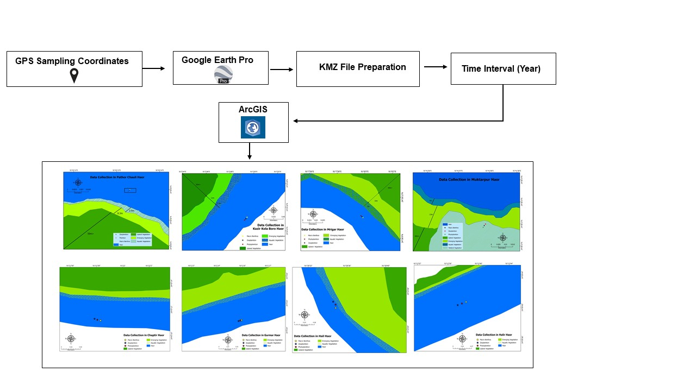
Geospatial work connected to a resilience project in the haor region.
Spatial analysis of historical earthquake information to explore geographic patterns and potential hazard context.
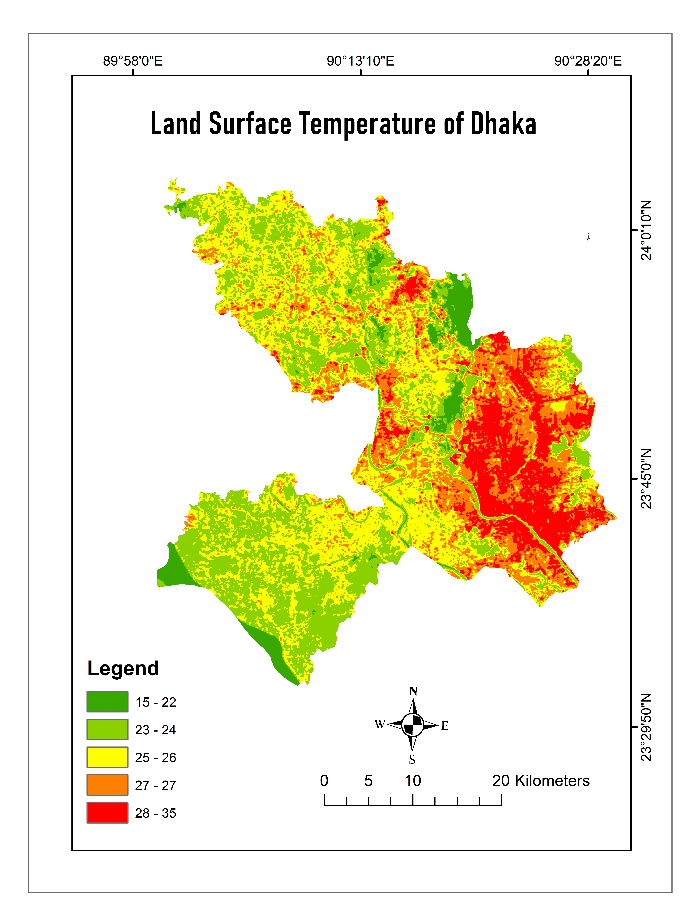
Satellite-derived land surface temperature mapping for Dhaka to explore the spatial distribution of surface heat.
Vegetation index analysis using Landsat 8 imagery to examine the distribution of vegetation across Dhaka.
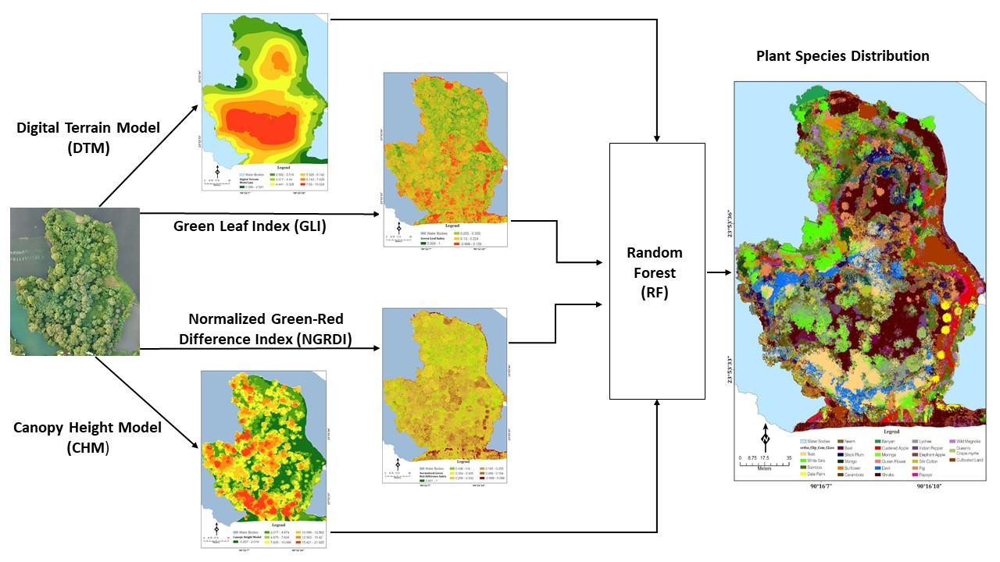
Species-distribution research combining geographic information and environmental analysis.

Field documentation from Sajek Valley, supporting geographic observation and landscape context.
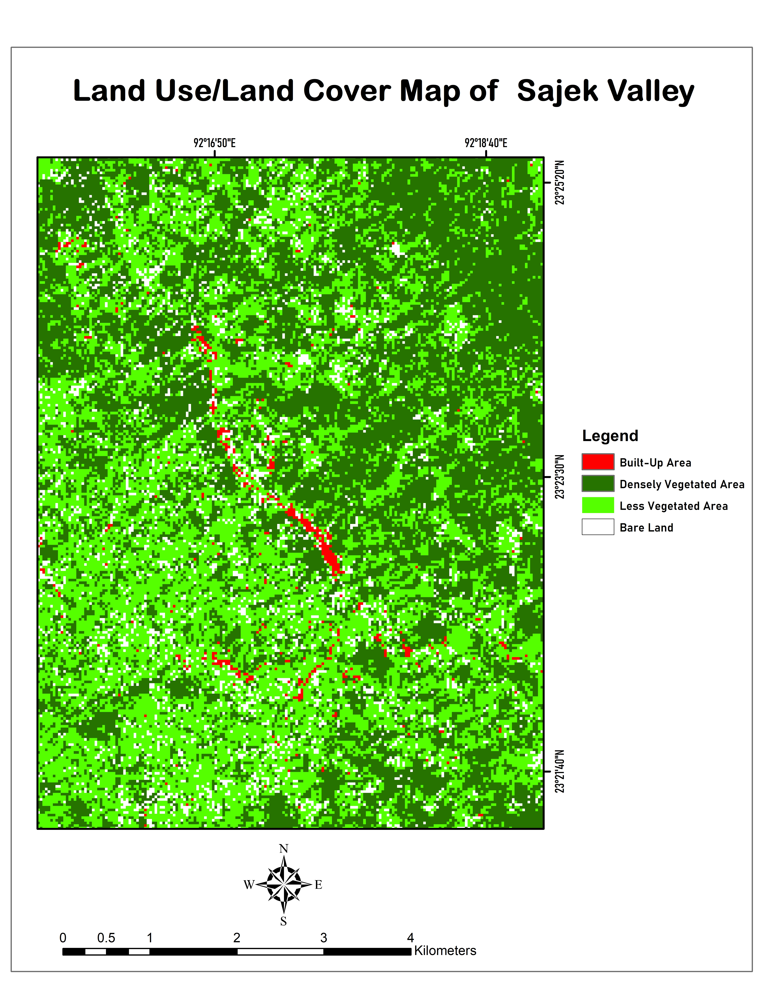
Field image documenting the Sajek landscape as part of geographic and environmental work.
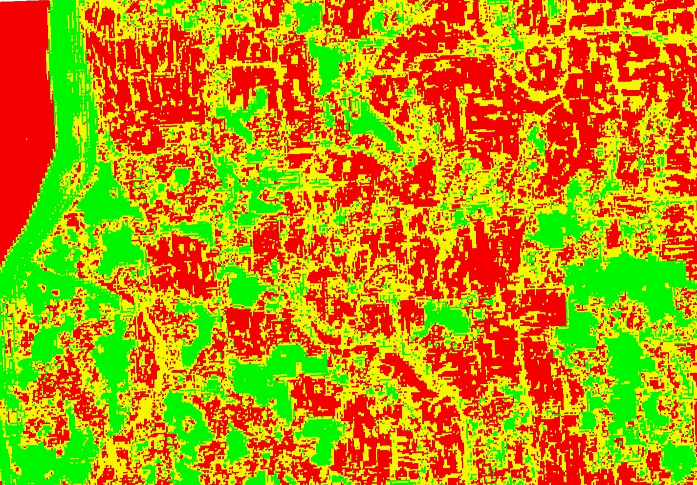
Spatial salinity analysis for Shilkhali, Cox’s Bazar, using an index-based remote-sensing workflow.
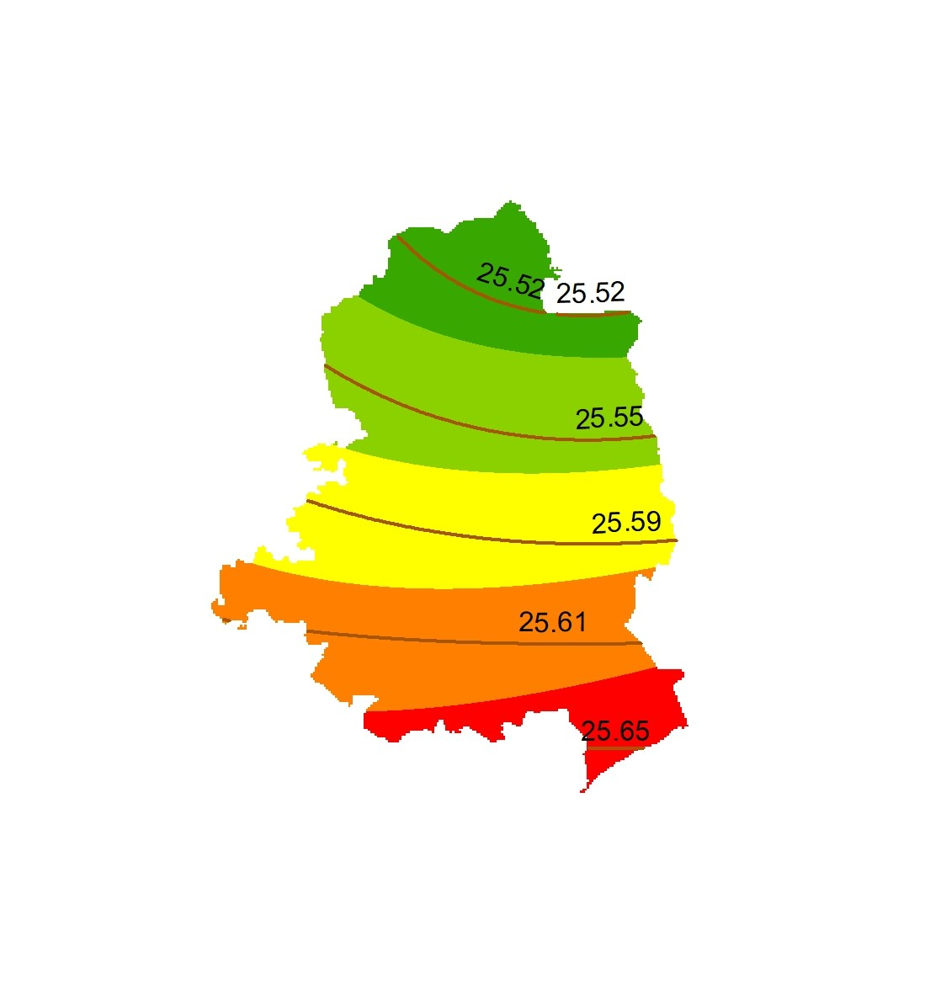
Temperature mapping for Madhupur using NetCDF climate data to visualize spatial variation.
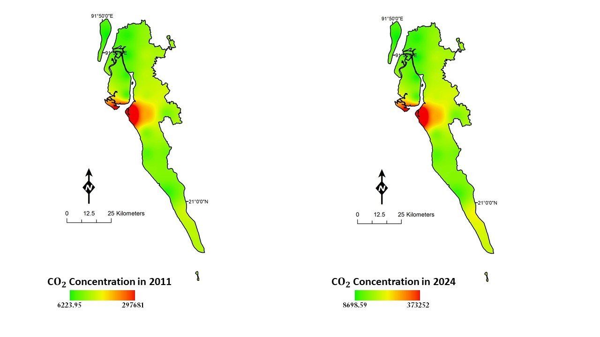
Mapping EDGAR CO₂ emission-flux data for Cox’s Bazar to examine the spatial distribution of emissions.

Spatial visualization of EDGAR N₂O emission-flux data for Cox’s Bazar.
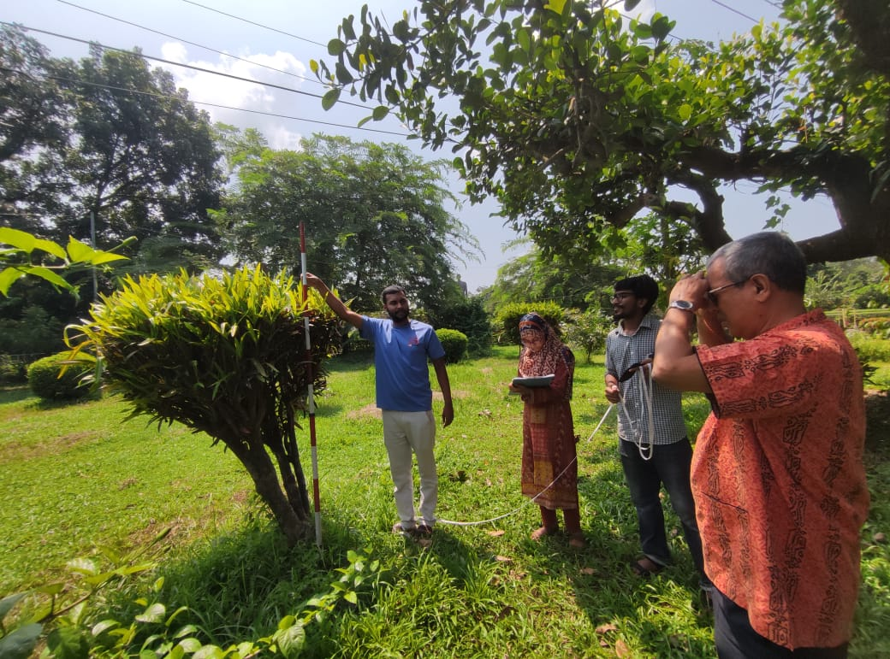
Field-based measurement work related to above-ground carbon and vegetation assessment.
UAV field activity at Alokdia Char, documenting drone-based geospatial data collection.
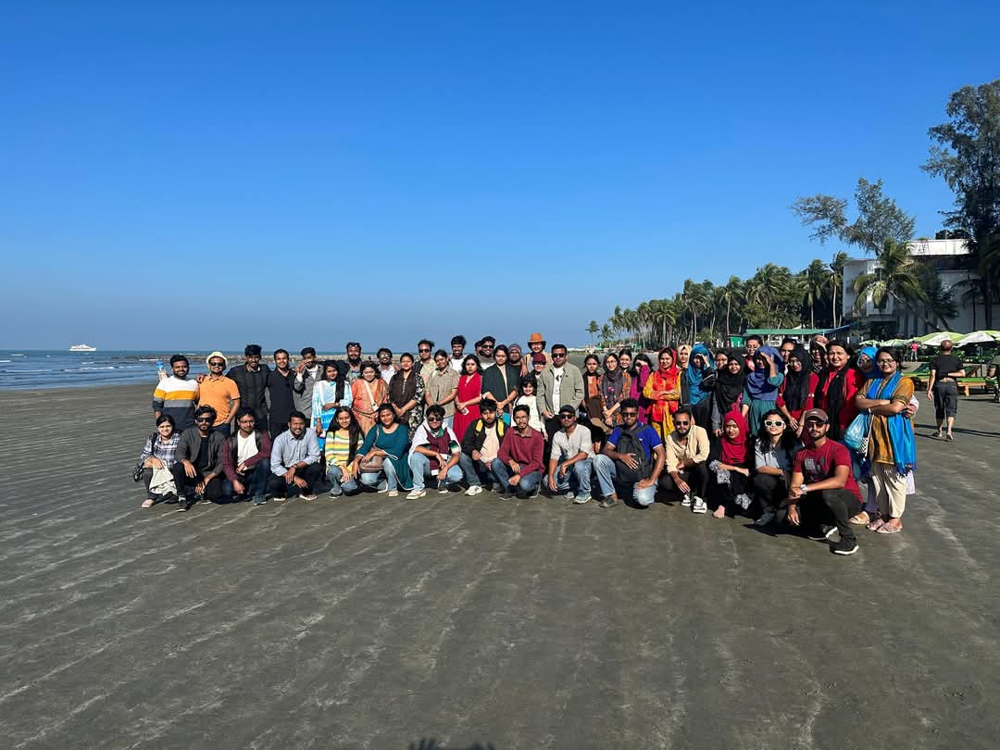
Field documentation from Saint Martin Island, supporting coastal and environmental geographic work.

A fieldwork photo from the uploaded project collection. Add a short project note to explain the location and method if needed.
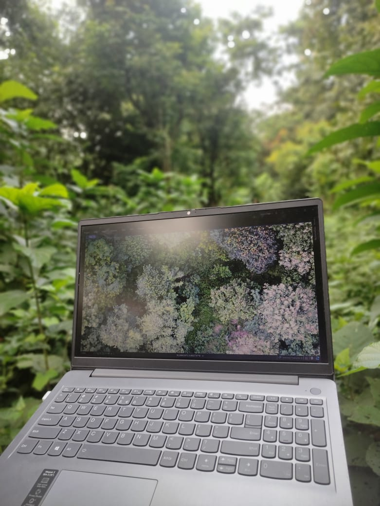
Tree canopy documentation for vegetation observation and ground-based environmental assessment.
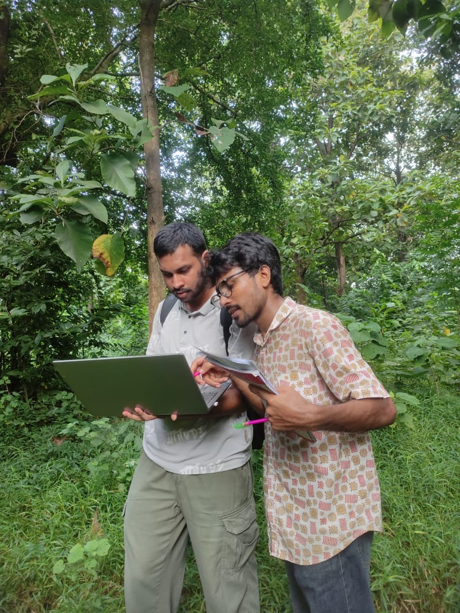
Ground verification of vegetation classification, connecting field observations with mapped classification results.
A GIS map of hospital locations in Dhaka, illustrating spatial distribution and service-location mapping.
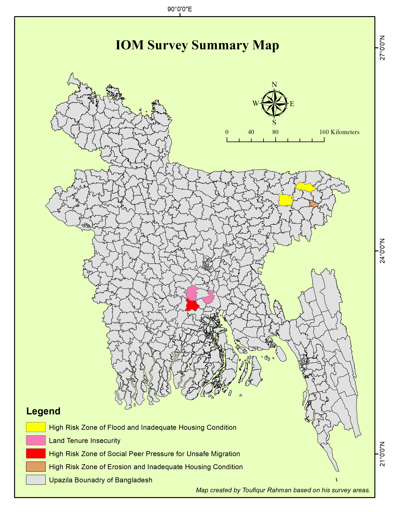
Geospatial work connected to a migration vulnerability project with IOM.
03 / EXPERTISE
Tools and methods I use to turn geographic data into clear, useful information.
Spatial data editing, map design, geoprocessing, digitizing, topology and edge-matching checks.
Satellite-image interpretation, vegetation indices, land-surface temperature and land-cover mapping.
Geometry and attribute checks, geo-matching, error documentation and quality assurance workflows.
Environmental mapping, field-based data collection, spatial interpretation and scientific communication.
04 / GROUND TRUTH
A selection of field activities and applied geospatial work from environmental surveys, mapping and verification.
04 / EXPERIENCE & EDUCATION
Keep entries concise, specific, and focused on your contribution.
MAY — PRESENT · UPDATE YEAR
Sheltech Consultancy Pvt. Ltd.
EDUCATION
Jahangirnagar University
Examinations completed. Add your thesis title, research methods, and completion year when ready.
FIELDWORK / TRAINING
Organization · Location · Year
Describe the purpose, tools, and measurable outcome in two or three sentences.
06 / ACADEMIC BACKGROUND
MASTER'S · COMPLETED EXAMINATIONS
Jahangirnagar University, Bangladesh
Geography · Environment · Spatial analysisUNDERGRADUATE STUDIES
Jahangirnagar University, Bangladesh
Geography · GIS · Remote sensing05 / PUBLICATIONS
List published work, accepted papers, conference abstracts, and manuscripts in progress in clearly labeled categories.
Research concept · Aminbazar, Dhaka, Bangladesh. Update the status, author list, methods, and link when the work is ready to share.
Author(s) · Journal / Conference · Year · DOI or public URL
Add publication link ↗Do not describe a manuscript as published unless it has actually been published. Use “in preparation” or “in progress” where appropriate.
06 / GET IN TOUCH
I'm open to conversations about GIS projects, geospatial research, collaboration, and professional opportunities.